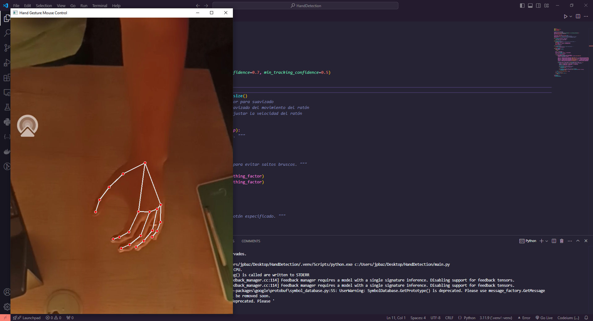

AI Mouse
A real-time human-computer interaction experiment: control the cursor and click using nothing but hand gestures in front of a webcam.
It runs on MediaPipe's Hand Landmarker, tracking up to two hands with landmark rendering for debugging, and drives the actual cursor through pynput. Gesture logic covers relative movement, left and right click, and pinch-state detection.
The thing nobody tells you is that raw landmark coordinates are far too noisy to point with: the cursor jitters constantly, and naive smoothing trades that jitter for lag, which feels even worse. The fix was a One Euro Filter, which adapts its cutoff to how fast you are moving: heavy smoothing when your hand is nearly still, almost none when you move quickly. That single component is the difference between a demo and something usable.
Built in 2023, early in my degree. It is where I learned that a working demo is not a system, and that most of the perceived quality of an interactive tool lives in the filtering and the feedback loop rather than in the model.
- Year
- 2023
- Code
- HandDetection

Next: Face Detection